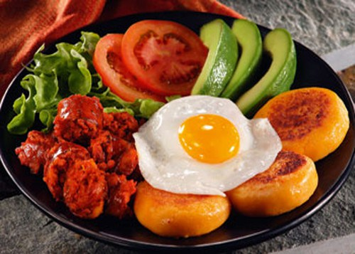

Alberto:
Me gusta mucho la comida ecuatoriana
Gabriela:
Muy sabrosa todas sus carnes.
Recetas de hogar
18 de diciembre del 2017
En Ecuador se suele comer de vaca, cerdo, cordero, pollo y también de cabra. Algunos platos se combinan con verduras como el seco de chivo o el seco de gallina, que consta de trozos de carne, tipo estofado, acompañado con arroz. Dentro de los platos exóticos se tiene el cuy , que suele comerse asado en las celebraciones de ciertas partes andinas del país. La carne de chancho (cerdo, lechón, cachorro), que se come en varios lugares del Ecuador, participa en la elaboración de diversos platos, algunos de ellos como fritada, hornado y chugchucaras.
Es de destacar de la cocina de Ecuador, los caldos(conocidos como sopas o locros) que suelen prepararse con verduras muy diversas y carne de gallina, son frecuentemente servidos en los mercados callejeros como desayuno. Algunos de ellos son muy populares como el yaguarlocro, que es una sopa de papas que lleva como ingrediente borrego y una salsa especial, que visitando el Ecuador sabrá degustar.
Autor: ecuatorianosenelmundo
Alberto:
Me gusta mucho la comida ecuatoriana
Gabriela:
Muy sabrosa todas sus carnes.
La comida de la costa ecuatoriana se caracteriza por sus deliciosas carnes, la variedad de ellas le brinda a su cocina una personalidad muy especial, además de los complementos con los que se sirven. En la costa no sólo degustarás el famoso maíz, también te deleitarás con la yuca, el maní, los camotes, así como el cacao y el coco, las frutas tropicales son deliciosas.
Autor: VIAJE JET.
Alberto:
Me gusta mucho la comida ecuatoriana
Gabriela:
Muy sabrosa todas sus carnes.